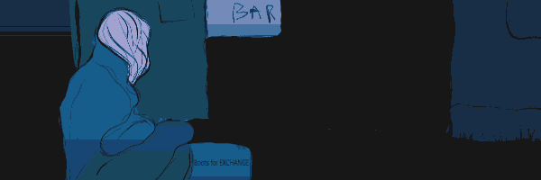
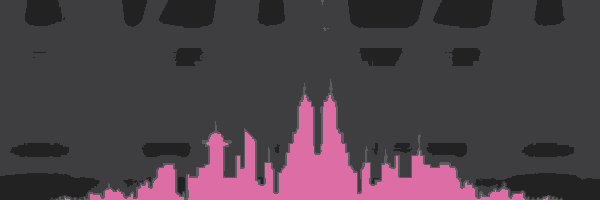
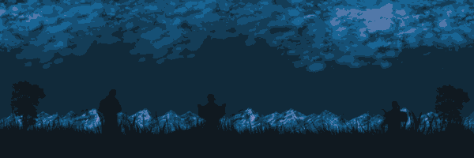
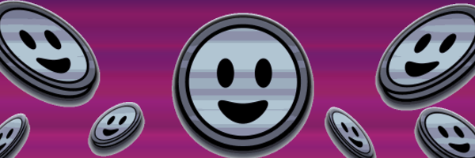

Levels and the Currency
The Underground
The Underground, which once proudly bore the title of the New World, is now a mere shadow of its former glory. It is now a place where people fight day after day for a chance at Ascension.
Withered yellow grass grows through cracks in the broken sidewalk, narrow streets twist between leaning multi-story and single-story houses. Dim light pours from dirty windows - the reflection of old televisions and cheap garlands. At first glance, the Underground is almost dead, especially at night. But life still flickers, stubbornly making its way out, like plant roots growing through granite.
The most famous place of the Underground, its heart and main entertainment, is the racing stadium. It is here that Ethan fights for the opportunity to give himself and his sick sister a better life.
The narrow streets are full of small eateries and bars serving strong drinks brewed from ethanol alcohol and strange herbs collected near the borders of the Wasteland. When dark twilight falls on the Underground, people gather on the roofs of old buildings. There they share their thoughts, look at the endless horizon with its dirty gray sky and whisper prayers to the Overseer, hoping that maybe She will hear and grant the mercy of an unscheduled Ascension.
Some residents of the Underground try to grow vegetables right in their apartments, hoping to survive. But poor soil, polluted water and lack of sunlight rarely produce good fruits.
Despite the dark times, people try to break through this gloom, striving for Ascension. The dream of one day living in the light again lives in their hearts, and they do everything possible to earn Smiles - a symbol of the desire for a better life.
The Ascended Level
True Paradise, a place of eternal bliss and nirvana; a place where no one knows suffering, exhaustion, or pain. A place to which all in the Underground Level aspire in their thoughts, dreams, and prayers, earning Smiles with blood and sweat. A place where each arrival receives the necessary help and is freed from the burden of their bitter existence.
The Ascended Level is, in fact, not entirely material... Those who reach it cease to belong to the world of full physical existence, becoming part of the great order of the Mother.
The inhabitants of the Underground know of the Ascended Level through propaganda broadcast on television screens and radios, from which messages from those who have ascended are transmitted. Visions of incomparable beauty appear on the screens: dense emerald forests, waterfalls sparkling with diamond water, crystal clear buildings whose spires reach into the shining azure. Here people know only joy, laughter and absolute harmony.
But no one gets there on foot on their own.
Having signed the Agreement of Consent for Ascension, the Assistants touch the chosen one and in a flash of white light, under a deep hum, disappear with them.
And the newly Ascended never return.
The Wastelands
Once, the Wastelands were called the Great Fields—people bathed in the greenery of winding hills and vast open spaces; they gathered herbs for ointments, teas, and other purposes.
After the Betrayal and the wrath of Mother, which descended upon these bountiful lands as well, they became the place of exile for the traitors—their personal Hell. This is a festering wound, an echo of the past. Some rumors say that at night, a drawn-out howling can be heard in the air, rising from the Wastelands in a discordant chorus, like the cold wail of the wind—people believe that the lifeless lands of the Wastelands are teeming with the ghosts of the past. Sparse vegetation and rare puddles of dirty water—that is all that remains of its former prosperity. Only grim myths reach the ears of Underground’s residents about how these outcasts survived after the Betrayal—but few care, for the people of the Underground, hate them with all their hearts—the traitors who trampled on Mother’s sacred love, the love that was always ready to help. Because of their vile act, Mother turned away from them, depriving the Underground of comfort and prosperity.
Now, murderers, thieves, and those who dare to speak of a new rebellion find their end in the Wastelands—anyone who rises against the society of the Underground. And this justice is seen as righteous retribution in the eyes of all.
What do they eat there, in the Wastelands? It is said that they devour small rodents and insects rummaging through the trash and filth—and this is always spoken with vengeful satisfaction.
Smiles
Smiles, as they are shown on posters, television screens, and stadium tabloids, are small blue coins with a happy, cartoonishly depicted face of a smiling little man on both sides. This currency was invented by the Overseer after the Betrayal as a chance for the inhabitants of the Underground to atone for the sins of their kin and grant themselves the right to live on the Ascended Level.
Smiles are not a physical currency that can be held in one's hands—rather, they are a digital currency that is credited to the account of every Underground resident. This account can be checked using special bracelets worn on their wrists. The main way to earn Smiles is the Racing Stadium—where the bravest take part in the races. The rest try to earn them through tasks related to the races—repairing motorcycles, posters announcing the next race date, fixing racing suits, and maintaining the sound, light, and notification systems at the races. For example, Murdoch earns them by repairing motorcycles for upcoming races, improving them, and building new ones. Some construct and repair radios and televisions, through which people receive constant messages about the Overseer, the Assistants, and promises of a better life.
Another way to earn Smiles is active propaganda about the love of Mother-Overseer and the Ascended Level through hand-drawn posters and putting them up on the streets. Silas, for example, tried to earn Smilies this way until the moment of his mother’s death and his subsequent unplanned Ascension.
Since Smiles are not a currency for exchange in everyday life, the main method of trade in the Underground is barter—a direct exchange of things that people have on hand. Everything is used—old clothes and shoes, spare parts, sometimes even still whole teeth, gathered herbs and seeds, clean water (although it is a great rarity). Master jewelers melt down old wires, pieces of metal, and glass, creating jewelry that is used as an item of exchange.
All this, simply to survive, hoping for something better.